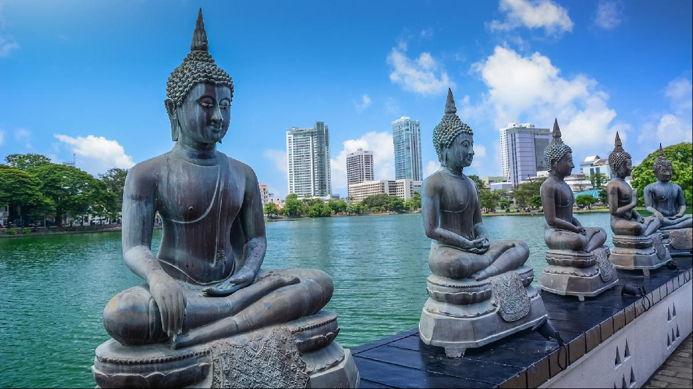
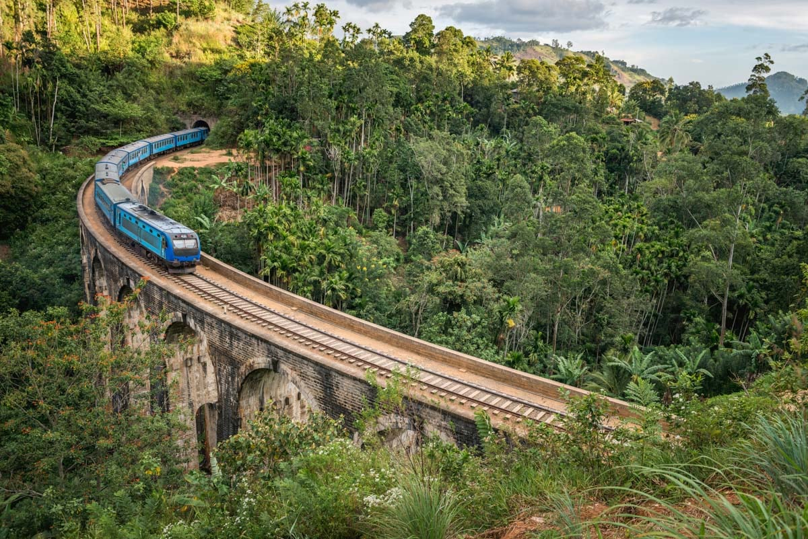
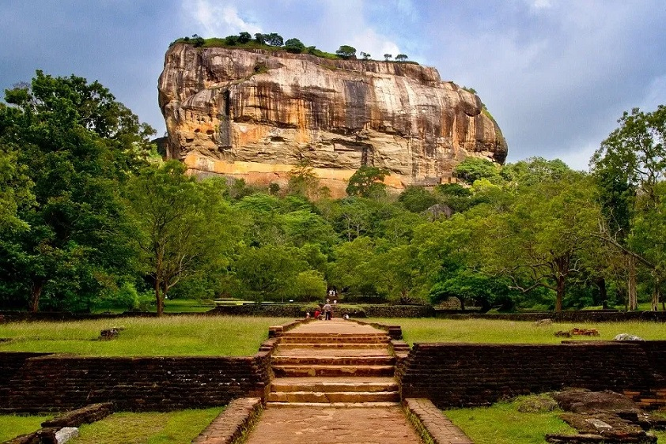

Colombo
Colombo is the capital and largest city of Sri Lanka, located on the country's west coast. It is a vibrant, cosmopolitan city with a rich history and a mix of modern and traditional cultural influences.
One of the top things to do in Colombo is to visit the city's many temples and historical landmarks. The Gangaramaya Temple is a must-see, with its ornate architecture and beautiful gardens. The Old Parliament Building, now home to the National Museum of Colombo, is another important historical site.
For those interested in shopping, Colombo has a variety of markets and shopping centers to explore. The Pettah Market is a bustling bazaar where you can find everything from local handicrafts and spices to clothing and electronics. The Odel Department Store and the Dutch Hospital Shopping Precinct are also popular shopping destinations.
Colombo is also home to many excellent restaurants, cafes, and bars, offering a wide range of cuisines to choose from. The city's seafood is particularly noteworthy, with many restaurants serving fresh catches from the nearby Indian Ocean.
Overall, Colombo is a lively and diverse city that offers something for everyone. Whether you're interested in history, culture, shopping, or just soaking up the local atmosphere, Colombo is a great place to visit.
Kandy

Kandy is located in the central hills of the country. It is known for its beautiful natural surroundings, cultural attractions, and pleasant climate.
One of the top things to do in Kandy is to visit the Temple of the Tooth, also known as the Sri Dalada Maligawa. This sacred Buddhist temple houses the relic of the tooth of the Buddha, and it is an important pilgrimage site for Buddhists from around the world. The temple is also known for its beautiful architecture and ornate decorations.
Kandy is also home to the Royal Palace of Kandy, which is now a museum that showcases the city's royal history and cultural traditions. The Kandy Lake, located in the center of the city, is a popular spot for leisurely walks and picnics.
For those interested in nature and outdoor activities, Kandy is surrounded by beautiful hills and forests that offer a range of hiking and trekking opportunities. The Udawattekele Sanctuary, located on the edge of the city, is a popular spot for birdwatching and nature walks.
In addition to its cultural and natural attractions, Kandy is also home to a number of markets, shops, and restaurants that offer a wide range of local and international products and cuisine. The Kandy Market, located in the center of the city, is a great place to buy souvenirs and sample local food.Overall, Kandy is a charming and laid-back city that offers something for everyone. Its cultural and natural attractions, combined with its pleasant climate and friendly locals, make it a great place to visit in Sri Lanka.
Galle

Galle is a city located on the southern coast of Sri Lanka. It is known for its beautiful colonial-era architecture, stunning beaches, and rich history.
One of the top things to do in Galle is to visit the Galle Fort, a UNESCO World Heritage site that is home to a number of historical landmarks and cultural attractions. The fort was built by the Dutch in the 16th century and is home to a number of well-preserved colonial-era buildings, including churches, mansions, and museums. The fort is also home to the National Maritime Museum, which showcases the country's maritime history and traditions.
Galle is also home to several beautiful beaches that are perfect for swimming, sunbathing, and water sports. Unawatuna Beach, located just a short distance from the city center, is a popular spot for swimming and surfing. The city is also home to several parks and gardens, including the Galle Dutch Fort Garden, which is a great place to relax and enjoy the outdoors.
In addition to its cultural and natural attractions, Galle is also home to a number of markets, shops, and restaurants that offer a wide range of local and international products and cuisine. The city's old town is home to a number of charming boutiques and artisanal shops that sell handmade crafts and souvenirs.
Overall, Galle is a charming and historic city that offers something for everyone. Its beautiful beaches, historic landmarks, and lively atmosphere make it a great place to visit in Sri Lanka.
Ella
Ella is a small town located in the central hills of Sri Lanka. It is known for its beautiful natural surroundings, charming atmosphere, and easygoing pace of life.
One of the top things to do in Ella is to go on a hike to one of the nearby mountains, such as Little Adam's Peak or Ella Rock. These hikes offer stunning views of the surrounding countryside and are suitable for hikers of all levels. The town is also home to a number of waterfalls, including the Rawana Falls and the Diyaluma Falls, which are both popular spots for swimming and picnicking.
Ella is also home to a number of charming cafes and restaurants that offer a wide range of local and international cuisine. The town is known for its delicious home-cooked Sri Lankan food, and there are many local eateries that serve traditional dishes such as rice and curry.
In addition to its natural attractions, Ella is also home to a number of cultural and historical landmarks, including the Ella Gap, a scenic viewpoint that offers panoramic views of the surrounding hills, and the Dowa Temple, a Buddhist temple that is known for its beautiful architecture and peaceful atmosphere.
Overall, Ella is a laid-back and charming town that is perfect for those looking to escape the hustle and bustle of city life. Its beautiful natural surroundings, charming atmosphere, and delicious food make it a great place to visit in Sri Lanka.
Sigiriya
Sigiriya, also known as the "Lion's Rock," is a UNESCO World Heritage Site located in the central Matale District of Sri Lanka. It is a massive rock fortress that rises over 200 meters (660 feet) above the surrounding plain.
The fortress was built in the 5th century by King Kasyapa, who sought to create a royal residence that would be both secure and luxurious. He transformed the top of the rock into a palace complex, complete with gardens, swimming pools, and a series of terraced platforms.
Sigiriya is most famous for its frescoes, which depict scenes of royal life and are considered some of the oldest and best preserved paintings in the world. The frescoes are located on the western slope of the rock and can only be accessed via a series of steep and narrow staircases.
In addition to its cultural significance, Sigiriya is also a popular tourist destination due to its stunning natural beauty. The rock itself is surrounded by dense forests and is home to a wide variety of wildlife, including monkeys, lizards, and birds. Visitors can also enjoy panoramic views of the surrounding countryside from the top of the rock.
Overall, Sigiriya is a must-see destination for anyone visiting Sri Lanka. Its unique blend of history, culture, and natural beauty make it a truly one-of-a-kind attraction.